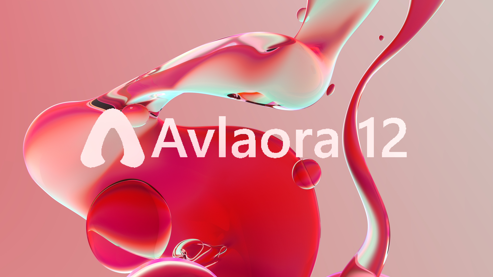
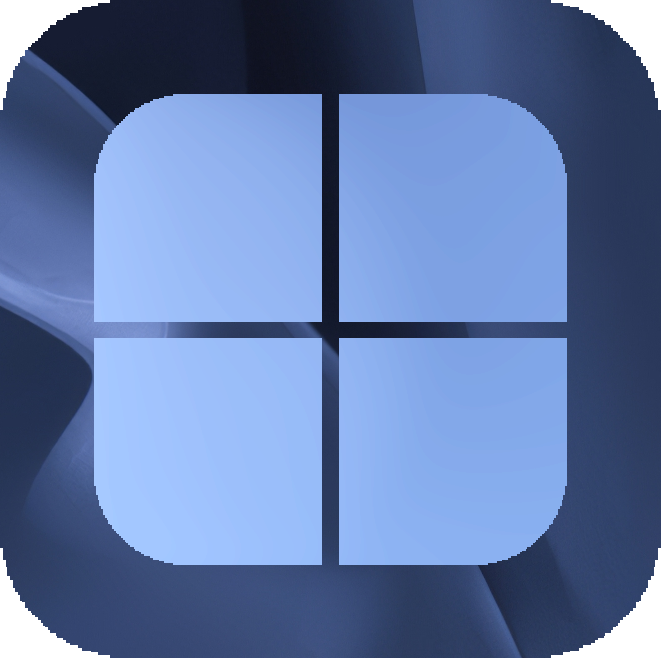

WebWindows
@Windows12-Website
•
0 videos
==============NOTE=============
Site GitHub URL: https://github.com/Fppps/Win12
WebWindows is a fan-made Windows 12 concept website project. It is not affiliated with, endorsed by, sponsored by, or connected to Microsoft.
videocam_off